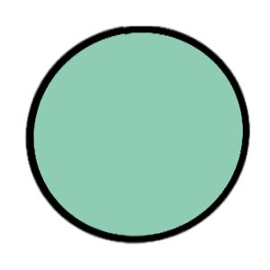
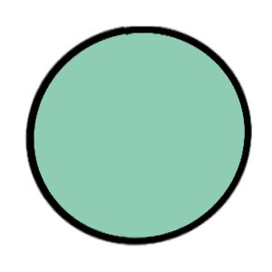

Wireframes

I altered this page, to include some contextual information on how I wanted to continue developing this site. As well as how I would make use of the Studio Ghibli API I found and where to find it.

I decided to add images on this page to make the data posts seem more interesting and to provide some visual insight on what each topic was about. This was also to provide a visual summary of what data visualisation is, for people who may have been exposed to it before, but may not have known what is actually was or called.
I added some placeholder images of art which I will later replace with my own data art. In the meantime, I wanted to be able to show my intended layout with the page.

I replaced the Studio Ghibli background on this page with a lighter solid colour as I thought it would make it easier to keep the reader's eyes focused on the main aspect of the page, i.e. my data visualisations.

I slightly altered this page, by adding descriptions beside each image instead of placing wireframes side by side, with annotations solely on the wireframe.
I also decided to add images on this page to make the blog posts seem more interesting and to provide some visual insight on what each topic was about.
I also replaced the Studio Ghibli background on this page with a lighter solid colour to increase visibility.
Style Guide
Main Heading
TITLES
Colour Scheme:


 

I decided to use this colour scheme consisting mainly of blues and light greens because it went well with the Studio Ghibli background I had chosen. I chose the API and theme, 'Studio Ghibli Movies' because I thought it would be easy to make a beautiful yet informative website. In future development, the background image (and sound design) will be dependent on which movie the user wants to learn more about. In reponse to the user's selection, the data visualisation and data art page's will display the appropriate information with the corresponding aesthetic.
On most pages, I went with a double column layout. As it allowed me to display an image/visualisation on one side and then it explain it in detail on the next side. I also think dividing up large chunks of information into two columns makes it easier for readers to skim through the text to find the essays they actually want to engage with.
I chose the font, 'Tahoma' as my main font as it is a sans serif font which makes it easier to read. The font I used for main headings, is one I imported from google fonts, it's called 'Coda_Caption'. It is also a sans serif font and has quite a heavy font weight which draws the readers' attention instantly. This makes it easier to sort information in a hierarchy as the 'Tahoma' font has quite a light font weight in comparison.